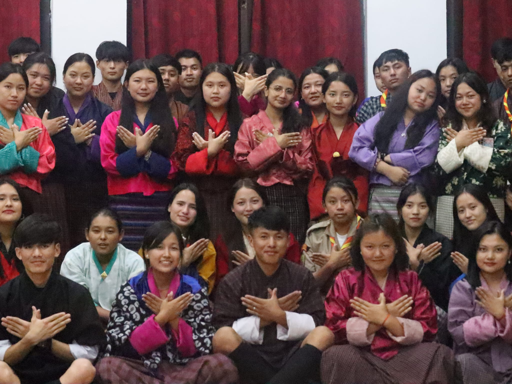

Members
Sherubtse UN
Members are the essential individuals who make up a team, organization, or group, each contributing to shared goals.
They play a critical role in executing tasks, sharing ideas, and supporting collaborative efforts.
Members often bring diverse skills, perspectives, and experiences, which enrich the group’s capabilities and foster innovation.
They participate in meetings, follow organizational guidelines, and work toward collective objectives, whether through individual responsibilities or group projects.
Together, members create a dynamic environment where collaboration leads to achieving the organization’s vision.